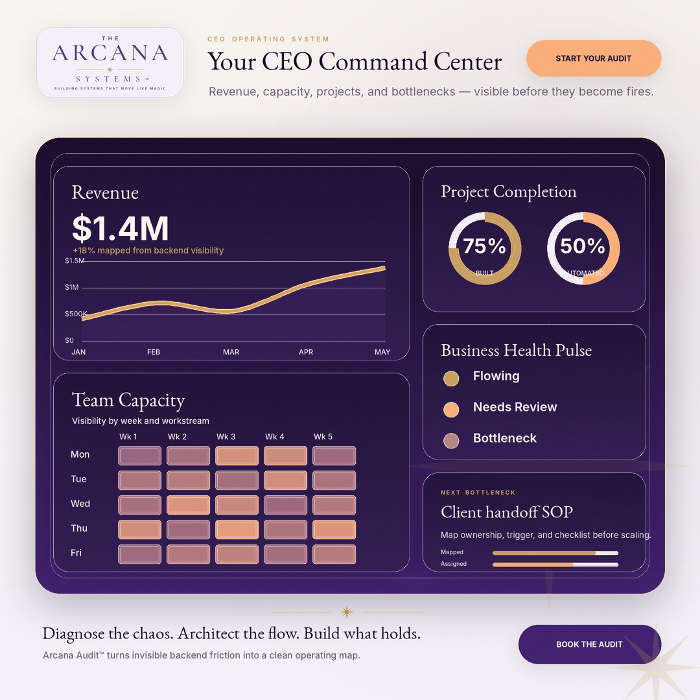

You check your business health in 10 minutes, not 2 hours
Digital Product Kit
CEO Command Center
Your business at a glance. Revenue. Operations. Capacity. One dashboard.
Includes a **$200 credit** toward your Arcana Audit Intensive.

The Promise
Most founders don't have a dashboard. They have six tabs, three spreadsheets, and a weekly "let me check with the team" meeting. The CEO Command Center changes that. It's a high-level strategic dashboard that gives you a "single pane of glass" view into the health of your business — moving you away from granular task management and into true executive oversight.
What's Inside
- Financial Health: Real-time revenue, pending invoices, profit margins
- Growth & Sales: Pipeline status, conversion rates, lead sources
- Delivery & Operations: Active project health, bottlenecks, client satisfaction
- Team Capacity: Resource allocation, utilization rates, hiring needs
- "The Pulse" View: One screen with every green/yellow/red status across the business
- Capacity Planner: Heatmap of team availability for the next 4 weeks
The Outcome
No more "let me check with the team" — the data is right there
Strategic decisions are informed by data, not gut feel
Clarity
The five metrics that matter most, always in view.
Structure
A weekly 30-minute Command Center Review replaces scattered status checks.
Freedom
You lead the business. The dashboard keeps the pulse.
The $200 Audit Upgrade
Buy the CEO Command Center and receive a **$200 credit** toward our Arcana Audit Intensive. We'll configure your dashboard with your real data during the Audit session.
Learn More About the Intensive